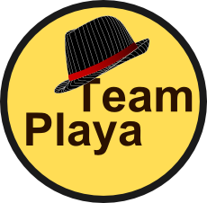

Aim
This project seeks to strenghen and build upon the
spirit of each individual member within
the Rotaract Club of Roseau through the use of
Gamification techniques.
| Badges | |||
|---|---|---|---|
| Gain this badge by coming to |
 Gain this badge by portraying |
Gain this badge by completing |
Gain this badge by being |
| Gain this badge by always |
Level 2 |
Gain this badge by practising |
Gain this badge by exibiting |
| Gain this badge as a peer |
Gain this badge by almost always |
V.P. Ezra Peter received 10 points for attending three(3) consecutive meetings on time. D.L.O Ishmael Joseph received 10 points for attending three(3) consecutive meetings on time. D.I.R Rodman Lewis received 10 points for attending three(3) consecutive meetings on time. R.O.T Vernice Thomas gained the Team Playa badge(Special recognition for Sports day event). HON R.O.T Vanessa Seraphine gained the Team Playa badge(Special recognition for Sports day event). HON R.O.T Johnny Seraphine gained the Team Playa badge(Special recognition for Sports day event). D.I.R Rodman Lewis gained the Team Playa badge(Special recognition for Sports day event). HON R.O.T Davis David gained the Team Playa badge(Special recognition for Sports day event).
R.O.T Vernice Thomas gained the Mr/Ms Speaker badge(Special recognition for Prof. 1st Debate). PROS Nadege Roach gained the Mr/Ms Speaker badge(Special recognition for Prof. 1st Debate). PROS Phil Austrie gained the Mr/Ms Speaker badge(Special recognition for Prof. 1st Debate).
R.O.T Alicia James gained the Early Bird Badge and x10 points. V.P. Ezra Peters gained the Early Bird Badge and x10 points. PROS Shernica White gained the Early Bird Badge and x10 points. PROS Tracey Clark gained the Early Bird Badge and x10 points. PROS Vernelle Edmund gained the Early Bird Badge and x10 points. Asst Sec/Tres Lisa Latouche scored an automatic x10 points for attending three(3) consecutive meetings on time. PRES. Tyishia Williams scored an automatic x10 points for attending three(3) consecutive meetings on time. HON R.O.T Jasmine Timothy scored an automatic x10 points for attending three(3) consecutive meetings on time. PROS Tichina Jervier scored an automatic x10 points for attending three(3) consecutive meetings on time.
HON R.O.T Vanessa Seraphine received 5 points in Club Anniversary Trivia. V.P. Ezra Peters received 10 points in Club Anniversary Trivia. IPP. Bianca Payne received 5 points in Club Anniversary Trivia. Sec. Kadisha Seraphine received 5 points in Club Anniversary Trivia.
IPP. Bianca Payne gained the Early Bird Badge and x10 points. HON R.O.T Vanessa Seraphine gained the Early Bird Badge and x10 points. Vernice Thomas gained the Early Bird Badge and x10 points. PROS. Darah Hodge scored an automatic x10 points for attending three(3) consecutive meetings on time. PROS. Tracey Clarke scored an automatic x10 points for attending three(3) consecutive meetings on time. PROS. Tichinah Jervier scored an automatic x10 points for attending three(3) consecutive meetings on time. PRO. Shanda Carbon scored an automatic x10 points for attending three(3) consecutive meetings on time. R.O.T Dane Hypolite scored an automatic x10 points for attending three(3) consecutive meetings on time.
The rules are simple To gain points, you must acquire as much badges as possible. For every badge you receive you gain a certain amount of points(refer to above) which increases your Rank within the Leaderboard. *Note. You automatically receive 10 Points for attending three(3) consecutive meetings on time.